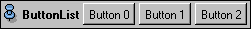

This port provides an arbitrary number of push buttons. The buttons are implicitly numbered 0, 1, 2, ... from left to right. When a button is pushed, the port's new flag is set. The index of the pushed button can be obtained using the command getValue. After the module was fired, the port's new flag is unset again and getValue returns -1. This means that the port does not store a permanent state. A push button is frequently used to trigger some action.

Modules using this port are, for example, GridVolume or ObliqueSlice.
Inherits all commands of Port.
Returns the index of the pushed button. If no button was pressed since the module was fired the last time, -1 is returned. The method does not interpret the snap toggle. In order to handle snapped buttons better use the command wasHit (see below).
Marks button index as being pushed.
Checks if the shift key was down the last time a button was pressed.
Checks if the control key was down the last time a button was pressed.
Checks if the alt key was down the last time a button was pressed.
Sets the shift key modifier flag.
Sets the control key modifier flag.
Sets the alt key modifier flag.
Checks whether the first button or button index is enabled or disabled.
Enables or disables the first button or button index. If a button is disabled, it is grayed out and cannot be pushed anymore.
Returns the label of button index or the port's label.
Sets the label of button index of the port's label.
Sets a Tcl command which is executed when the specified button is pressed. This feature is especially useful in script objects since it avoids writing long Tcl code with many if statements. If a command has been set for a button, the owning module will not be fired and the port will not be touched when the button is pressed. The command will be executed in the global Tcl namespace. The variable this refers to the owning module.
Returns the Tcl command associated with the specified button or an empty string if no Tcl command has been set.
Returns the number of buttons of the port.
Sets the number of buttons of the port. New buttons are created with an empty label.
Enable or disable the snap toggle for the first button or for button index.
Snap or unsnap a button. The button's snap toggle must be enabled.
Check whether the specified button is snapped or not.
Returns 1 if the specified button was hit or if its snap toggle is down.